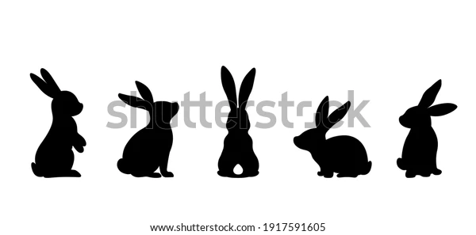
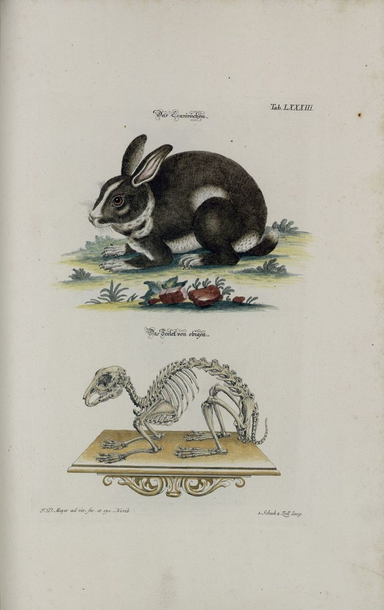
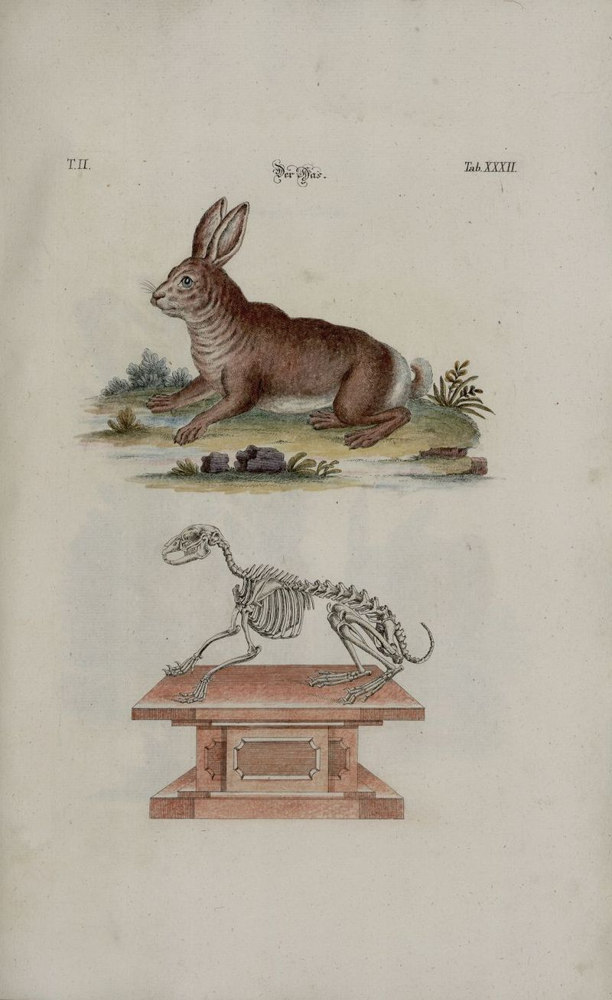

Rabbits, also known as bunnies or bunny rabbits, are small mammals in the family Leporidae (which also contains the hares) of the order Lagomorpha (which also contains the pikas). Oryctolagus cuniculus includes the European rabbit species and its descendants, the world's 305 breeds[1] of domestic rabbit. Sylvilagus includes 13 wild rabbit species, among them the seven types of cottontail. The European rabbit, which has been introduced on every continent except Antarctica, is familiar throughout the world as a wild prey animal and as a domesticated form of livestock and pet. With its widespread effect on ecologies and cultures, the rabbit is, in many areas of the world, a part of daily life—as food, clothing, a companion, and a source of artistic inspiration.
Although once considered rodents, lagomorphs like rabbits have been discovered to have diverged separately and earlier than their rodent cousins and have a number of traits rodents lack, like two extra incisors.
A male rabbit is called a buck; a female is called a doe. An older term for an adult rabbit used until the 18th century is coney (derived ultimately from the Latin cuniculus), while rabbit once referred only to the young animals.[2] Another term for a young rabbit is bunny, though this term is often applied informally (particularly by children) to rabbits generally, especially domestic ones. More recently, the term kit or kitten has been used to refer to a young rabbit.
A group of rabbits is known as a colony or nest (or, occasionally, a warren, though this more commonly refers to where the rabbits live).[3] A group of baby rabbits produced from a single mating is referred to as a litter[4] and a group of domestic rabbits living together is sometimes called a herd.
The word rabbit itself derives from the Middle English rabet, a borrowing from the Walloon robète, which was a diminutive of the French or Middle Dutch robbe.
The term "rabbit" is typically used for all Leporidae species excluding the genus Lepus. Members of that genus are instead known as hares or jackrabbits.
Lepus species are typically precocial, born relatively mature and mobile with hair and good vision, while rabbit species are altricial, born hairless and blind, and requiring closer care. Hares live a relatively solitary life in a simple nest above the ground, while most rabbits live in social groups in burrows or warrens. Hares are generally larger than rabbits, with ears that are more elongated, and with hind legs that are larger and longer. Descendants of the European rabbit are commonly bred as livestock and kept as pets, whereas no hares have been domesticated - the breed called the Belgian hare is actually a domestic rabbit which has been selectively bred to resemble a hare.
 Rabbits have long been domesticated. Beginning in the Middle Ages, the European rabbit has been widely kept as livestock, starting in ancient Rome. Selective breeding has generated a wide variety of rabbit breeds, of which many (since the early 19th century) are also kept as pets. Some strains of rabbit have been bred specifically as research subjects.
As livestock, rabbits are bred for their meat and fur. The earliest breeds were important sources of meat, and so became larger than wild rabbits, but domestic rabbits in modern times range in size from dwarf to giant. Rabbit fur, prized for its softness, can be found in a broad range of coat colors and patterns, as well as lengths. The Angora rabbit breed, for example, was developed for its long, silky fur, which is often hand-spun into yarn. Other domestic rabbit breeds have been developed primarily for the commercial fur trade, including the Rex, which has a short plush coat.